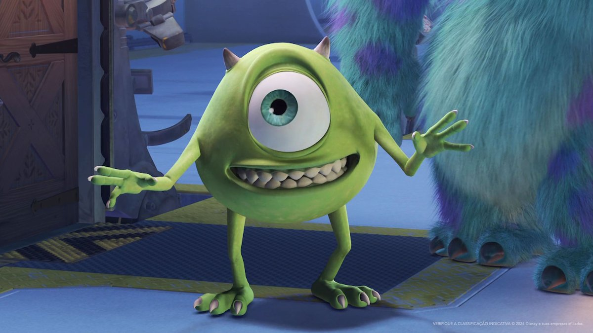

Mike Wazowski é um monstro verde de apenas um olho, conhecido pelo seu humor, inteligência e determinação. Ele trabalha na empresa Monstros S.A., onde ajuda a gerar energia através dos sustos em crianças.